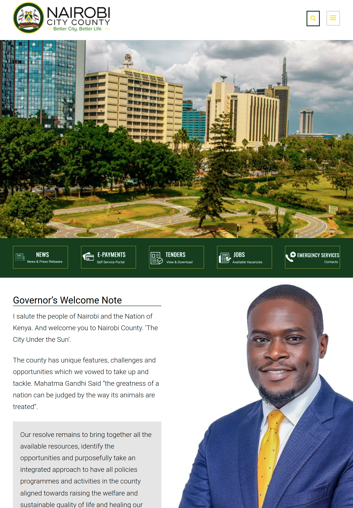

Josephine Mueni Nzioka
Nairobi County
As the site appears related items are grouped together for good orgarnisation of the page.For a good visual design Nairobi county have grouped the image before the paragraph and governor image
Nairobi County
Elements are positioned in a straight line to archieve alignment principle.Its shown by the equal space between the objects,users can see the contents positioned in their right place.Each text too is alignened together in this site.
Nairobi County
Contrast is potrayed in the page as they used white color with a background color of green and white background with black font color